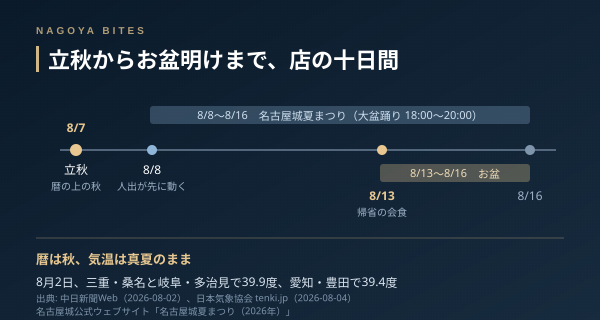

季節短信
立秋の名古屋、お盆の会食が動き出す一週間
8月7日は立秋。暦の上では秋が始まる日だが、名古屋の体感は真夏のままだ。8月2日には近隣の桑名と多治見で39.9度、豊田で39.4度が観測されている。それでも飲食店の一週間は今日から変わる。8日に始まる名古屋城夏まつりと、13日からのお盆が続けて来るからで、予約の受け方も仕入れの量も、この十日間で組み替わる。

この記事はNAGOYA BITES — 名古屋の厳選1,100店超を業界視点で紹介するグルメガイドの一部です。
立秋は暦の区切りであって、気温の区切りではない。日本気象協会は8月4日の記事で、5日以降も名古屋や岐阜で猛烈な暑さが続くと伝えていた。街の側は真夏のままだ。ただ店の時間割は、今日から確実に変わる。
十日間に二つの山が続けて来る
名古屋城夏まつりは8月8日から16日まで。大盆踊り大会は18時から20時で、終わってから人が動く。お盆は13日から16日で、今年は並びがよく、8日の土曜から最大9連休を取れる人もいる。つまり街の人出は8日に先に立ち上がり、13日に性格を変えてもう一度立ち上がる。前半は観光と祭りの客、後半は帰省の会食だ。
この二つは、店から見ると必要な準備が違う。祭りの客は少人数で時間が遅く、予約なしで入ってくる。帰省の会食は6人から10人、時間は早め、席は個室か座敷、そして一週間前には決まっている。同じ十日間で、予約台帳の埋まり方が前半と後半でまったく別の形になる。人数と席が先に決まる後半の使い方は接待・会食の特集の見方がそのまま効く。
ちなみに祭りの側の入口は安い。名古屋城の観覧料は大人500円、中学生以下は無料で、この値段で20時30分まで開いている。ただし観覧料は2026年10月1日から改定される予定になっている。祭りを挟んで一杯という組み立てができるのは、今年の夏までの条件かもしれない。
この時期に席を取るなら
繁忙の作り方が二層になるぶん、谷もはっきり出る。祭りの週の18時台は、盆踊りに人が向かうので意外と空く。逆に20時を回ると一気に混む。帰省の会食が入る13日以降は、早い時間から埋まって遅い時間が残る。取りづらいと感じたら、時間帯を一つずらすほうが、店を変えるより早い。
仕入れの側も動く。この気温が続くと日持ちのしない食材は数を絞って入れることになり、その日の分が出たら終わりという運用になりやすい。お盆の前後は市場の休みも挟むので、狙いの一品があるなら前半のうちに行くほうが確実だ。
暦が秋に入った日に真夏の話をするのは妙だが、店の側はもう次の季節の準備を始めている。残暑の名古屋で外さない一週間は、混む日ではなく、混み方の種類を見て決めるといい。
Inside Perspective — 業界人の目利き
- 8日開幕の夏まつりと13日からのお盆で、同じ十日間に性格の違う繁忙が二度来る。前半は少人数・遅い時間・予約なし、後半は6〜10人・早い時間・個室指定と、必要な準備がまったく違う
- 祭りの週は盆踊りの時間帯（18時〜20時）に人が向かうため18時台が空きやすく、20時以降に混む。13日以降は逆に早い時間から埋まる
- 猛暑が続く時期は日持ちしない食材を絞って入れる運用になりやすく、お盆前後は市場の休みも挟む。狙いの一品があるなら十日間の前半が確実